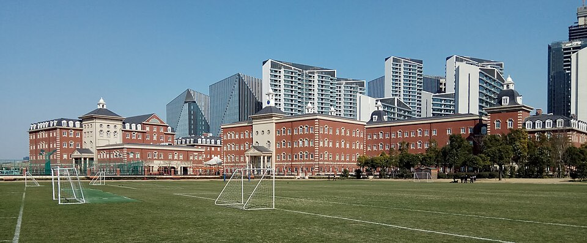

웰링턴 칼리지 인터내셔널 상하이(중국 상하이 푸동) 캠퍼스 · 사진: Ndovu09 / Wikimedia Commons, CC BY-SA 4.0
웰링턴 칼리지 인터내셔널 상하이(Wellington College International Shanghai) — 한 학교를 다녀도 평가 규칙은 세 번 바뀝니다
1. 어떤 학교인가
· 개교 — 2014년에 문을 연 것으로 알려져 있습니다.
· 위치 — 중국 상하이 푸동신구, 황푸강 남쪽의 첸탄(前滩, New Bund) 국제비즈니스존 안에 있는 것으로 안내됩니다.
· 계열 — 영국 버크셔의 웰링턴 칼리지와 연결된 학교로 소개됩니다.
· 연령 — 유아 과정(Pre-Nursery)부터 Year 13까지 이어지는 것으로 안내됩니다. (시작 연령은 안내 자료마다 만 2세와 만 3세로 다르게 적혀 있어, 올해 요강을 직접 확인하셔야 합니다.)
· 교육과정 — Year 9까지는 영국 국가교육과정(National Curriculum for England)과 국제 초등 교육과정(IPC)을 섞어 운영하는 것으로 안내됩니다.
· Year 10~11 — IGCSE. 영어·수학·화학이 필수 과목으로 안내되고, 과학·외국어·인문·예술 등에서 선택 과목을 얹는 구조로 소개됩니다.
· Year 12~13 — IB 디플로마 프로그램(IBDP).
· 언어 — 수업 언어는 영어이고, 중국어(만다린)를 전 학년에서 가르치는 것으로 안내됩니다.
· 하우스 — 영국 본교에서 쓰는 이름을 그대로 쓰는 하우스(House) 제도가 소개됩니다.
※ 학비·정원·재학생 수·합격률·시험 성적처럼 해마다 바뀌는 수치는 이 글에서 다루지 않습니다. 개설 과목과 학년 구성도 연도에 따라 달라질 수 있으니 올해 요강을 학교에 직접 확인하세요.
2. 핵심 ① — 한 학교인데 평가 규칙이 세 번 바뀝니다
여기가 이 학교를 고를 때 가장 먼저 보셔야 할 지점입니다. 아래 표는 구간마다 아이가 실제로 받는 평가가 어떻게 달라지는지를 정리한 것입니다.
| 구간 | 무엇으로 평가하나 | 중간에 들어가면 | 이때 물을 것 |
|---|---|---|---|
| 유아 과정 | 관찰·기록 중심. 점수표가 없다 | 부담이 가장 적다 | 자리와 형제 우선 여부 |
| Year 1~9 | 교내 평가가 이어진다(영국식 + IPC) | 학기 중에도 비교적 열려 있다 | 영어 지원을 받는지, 몇 학년까지인지 |
| Year 10~11 (IGCSE) | 2년 코스 + 외부 시험. 과목을 미리 고른다 | 가장 어렵다 — 1년 차 진도와 선택 과목이 이미 정해져 있다 | 코스 중간 합류가 되는가, 된다면 어느 과목으로 |
| Year 12~13 (IB 디플로마) | 또 다른 2년 코스. 여섯 영역·HL/SL·긴 과제 | 사실상 닫혀 있다고 보는 편이 안전 | HL로 가려는 과목의 선수 조건 |
※ 위 표는 구간의 성격을 구조로만 비교한 것입니다. 실제 합류 가능 여부와 조건은 학교와 연도에 따라 다르므로 입학처에 직접 확인하세요.
그래서 계산은 이렇게 합니다. 종이에 세 줄만 적어 보세요.
① "우리 아이가 들어가는 해의 Year는 몇인가."
② "그 Year는 위 표에서 어느 구간의 몇 번째 해인가."
③ "우리 가족의 체류 예정 기간은 몇 년인가. 그 기간이 끝나는 해에 아이는 어느 구간에 있나."
세 번째 줄이 핵심입니다. 주재원 발령과 임차는 보통 2~3년 주기인데, 이 학교의 마지막 네 해는 2년짜리 코스가 두 번 이어집니다. 들어갈 때 맞아도 나올 때 어긋나는 경우가 생깁니다. 특히 IGCSE 1년 차에 들어와 2년 차에 귀국하거나, IB 디플로마 1년 차에 학교를 옮기게 되는 경우가 가장 손해가 큽니다. 두 경우 모두 2년을 채워야 자격이 나오는 구조라 중간에 끊기면 처음부터 다시 시작해야 할 수 있습니다. 편입 일반론은 편입·전학 총정리에 정리해 두었습니다.
3. 핵심 ② — 하우스(House), 담당자가 둘이 됩니다
영국 계열 학교를 처음 보내시면 낯선 단어가 하나 나옵니다. 하우스(House)입니다. 이 학교도 영국 본교에서 쓰는 하우스 이름을 그대로 쓰는 것으로 소개됩니다.
하우스는 반과 별개로 아이를 묶어 두는 생활 단위입니다. 학년이 섞인 무리에 아이를 배정하고, 그 무리를 맡은 교사가 성적이 아니라 생활과 정서를 봅니다. 학교 안 행사나 대항전도 하우스 단위로 하는 경우가 많습니다.
한국 학부모님께 이게 왜 중요하냐면, 물어볼 사람이 둘이 되기 때문입니다.
· "수학 점수가 왜 이렇게 나왔나요" → 과목 교사에게
· "아이가 점심시간에 혼자 있는 것 같습니다", "요즘 학교 가기 싫어합니다" → 하우스 담당 교사에게
한국 학교의 담임 한 명에게 다 물으시던 습관 그대로 가시면, 정작 답을 줄 수 있는 사람에게 질문이 닿지 않습니다. 입학 후 첫 달에 "우리 아이 하우스는 어디이고 담당 교사는 누구이며 어떤 경로로 연락드리면 되는지" 한 번 확인해 두세요. 정기 상담에서 무엇을 물을지는 학부모 상담 준비법에 정리해 두었습니다.
4. 핵심 ③ — 상하이는 "자격"과 "생활권"을 먼저 봅니다
중국 본토의 국제학교는 학교를 고르기 전에 확인할 것이 하나 더 있습니다. 등록 자격입니다. 상하이의 외국인 자녀 대상 학교는 여권과 체류 신분에 따라 등록 가능 여부가 갈립니다. 이 부분은 SCIS 상하이 글에서 자세히 다루었으니 여기서는 반복하지 않겠습니다. 다만 유학원 요약이나 몇 해 전 후기가 아니라, 입학처의 올해 안내로 확인하셔야 한다는 점만 다시 말씀드립니다.
두 번째는 생활권입니다. 이 학교는 황푸강 남쪽 푸동 첸탄에 있습니다. 상하이는 강 하나로 생활권이 크게 갈려서, 푸시(강 서쪽)에 집을 얻고 푸동 학교에 보내는 조합은 통학 시간이 크게 늘어납니다. 집을 먼저 정하고 학교를 고르는 순서보다, 학교를 좁힌 뒤 그 생활권에서 집을 보는 순서가 안전합니다. 상하이의 다른 학교는 상하이 아메리칸 스쿨 · 콘코디아 · 덜위치 칼리지 상하이 · NAIS 푸동·BISS 푸시 · SCIS 를 함께 보세요.
5. 한국(주재원) 학생·학부모가 겪는 어려움
· 영어가 아니라 "과목 영어"에서 막힙니다. 회화가 되는데 과학·인문 교과서를 못 읽는 상태가 이어집니다. → EAL · 리딩 레벨 읽는 법
· Year와 Key Stage가 낯섭니다. 학년 이름이 Year로 바뀌고 그 위에 Key Stage라는 묶음이 또 있어 학년 배정부터 헷갈립니다. → 학년 체계 총정리
· 과목 선택이 한국보다 훨씬 이릅니다. Year 9 끝에 IGCSE 과목을 고르는 판단이 옵니다. → IGCSE 과목 선택
· 중국어가 한 과목 더 붙습니다. 영어로 수업을 따라가는 것만도 벅찬데 중국어 시간이 따로 있어, 첫 해에 아이가 가장 지치는 지점이 여기입니다. 학교에 수준별 반 편성이 있는지부터 물으세요.
· 기한이 몰리는 구조를 몰라 첫 학기를 놓칩니다. IGCSE와 IB 모두 과제 기한이 겹쳐서 옵니다. → 숙제·과제 관리 · 학습 플랫폼·시간표 읽는 법
· 수학은 용어와 서술에서 막힙니다. 이미 아는 단원인데 알지브라·지오메트리 용어가 영어라 손을 못 댑니다. 답만 적으면 과정 점수를 받지 못합니다. → 알지브라 공부법
6. 그래서 이렇게 준비합니다
🧭 먼저 — 구간표에 우리 아이를 올려 본다
위 2번의 세 줄을 적는 것으로 시작합니다. 들어가는 Year, 그때의 구간, 체류가 끝나는 해의 구간. 이 세 줄이 나오면 입학처에 물을 질문이 저절로 정해집니다.
📖 영어과외 — 지시어와 답안 형식부터
영국식 학교의 점수는 지시어(describe·explain·evaluate·justify)를 정확히 읽고 배점에 맞는 분량으로 쓰는 데서 갈립니다. 내용을 알아도 형식이 안 맞으면 깎입니다. (영어 공부법 참고)
📐 수학과외 — 영어 용어를 붙이고, 과정을 문장으로
아이가 이미 아는 개념에 영어 용어를 다시 붙이는 작업부터 합니다. 그다음 풀이 과정을 영어 문장으로 적는 습관을 들입니다. IGCSE와 IB 모두 과정을 보여 주지 않으면 점수를 다 받지 못합니다.
📅 학교를 방문하신다면
물을 것은 넷입니다. "우리 아이 Year에 자리가 있는가", "IGCSE·IB 코스 중간 합류가 가능한가", "중국어는 수준별로 나뉘는가", "하우스 담당 교사와는 어떻게 연락하는가". → 오픈데이·학교 방문 준비법
7. 상하이의 강점 — 시차 한 시간의 화상과외
상하이는 한국보다 한 시간 느립니다. 상하이 오후 5시가 한국 오후 6시라, 아이가 하교하고 저녁을 먹은 직후 시간이 한국 강사진의 수업 시간과 그대로 맞습니다. 주 1~2회 고정으로 잡아도 가족 저녁 시간과 크게 부딪히지 않습니다. 수업은 아이의 실제 과제와 학교가 준 채점 기준을 화면에 놓고 "어느 항목에서 깎였는지"부터 보는 방식이 가장 빠릅니다.
정리
웰링턴 칼리지 인터내셔널 상하이는 2014년 개교로 알려진 푸동 첸탄의 영국계 학교입니다. 유아 과정부터 Year 13까지 한 학교에서 이어지지만, 그 안에서 평가 규칙은 세 번 바뀝니다. 유아 과정의 관찰, Year 1~9의 교내 평가, Year 10~11의 IGCSE, Year 12~13의 IB 디플로마. 그래서 이 학교를 보실 때는 "몇 학년"이 아니라 "어느 구간의 몇 번째 해"로 계산하셔야 합니다. 30분 무료 상담으로 아이의 구간부터 함께 짚어 보세요.